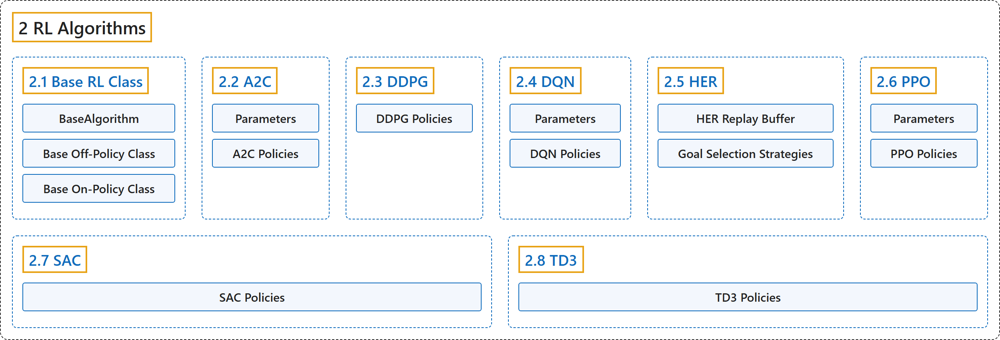

2. RL Algorithms
Classification

Glossary
| Term | Definition | 中文翻译 | Source |
|---|---|---|---|
| 2 RL Algorithms 强化学习算法 |
(context) "This table displays the RL algorithms that are implemented in the Stable Baselines3 project, along with some useful characteristics: support for discrete/continuous actions, multiprocessing." | （语境）此表列出 Stable Baselines3 项目中实现的强化学习算法，以及一些有用的特性：是否支持离散或连续动作、多进程。 | Raffin et al., n.d.-g, "RL Algorithms", para. 1 |
| 2.1 Base RL Class 强化学习基类 |
"Common interface for all the RL algorithms" | 所有强化学习算法的公共接口 | Raffin et al., n.d.-b, "Base RL Class", para. 1 |
| 2.2 A2C A2C（优势演员-评论家） |
"A synchronous, deterministic variant of Asynchronous Advantage Actor Critic (A3C)." | 异步优势演员-评论家（A3C）的同步、确定性变体。 | Raffin et al., n.d.-a, "A2C", para. 1 |
| 2.3 DDPG DDPG（深度确定性策略梯度） |
"Deep Deterministic Policy Gradient (DDPG) combines the trick for DQN with the deterministic policy gradient, to obtain an algorithm for continuous actions." | 深度确定性策略梯度（DDPG）把 DQN 的技巧与确定性策略梯度结合起来，得到一种用于连续动作的算法。 | Raffin et al., n.d.-c, "DDPG", para. 1 |
| 2.4 DQN DQN（深度 Q 网络） |
"Deep Q Network (DQN) builds on Fitted Q-Iteration (FQI) and make use of different tricks to stabilize the learning with neural networks: it uses a replay buffer, a target network and gradient clipping." | 深度 Q 网络（DQN）以拟合 Q 迭代（FQI）为基础，并用多种技巧来稳定神经网络的学习：它使用经验回放缓冲区、目标网络和梯度裁剪。 | Raffin et al., n.d.-d, "DQN", para. 1 |
| 2.5 HER HER（事后经验回放） |
"HER is an algorithm that works with off-policy methods (DQN, SAC, TD3 and DDPG for example)." | HER 是一种与离策略方法配合使用的算法（例如 DQN、SAC、TD3 和 DDPG）。 | Raffin et al., n.d.-e, "HER", para. 2 |
| 2.6 PPO PPO（近端策略优化） |
"The Proximal Policy Optimization algorithm combines ideas from A2C (having multiple workers) and TRPO (it uses a trust region to improve the actor)." | 近端策略优化算法结合了 A2C（使用多个工作进程）和 TRPO（用信赖域改进演员）的思想。 | Raffin et al., n.d.-f, "PPO", para. 1 |
| 2.7 SAC SAC（软演员-评论家） |
"Soft Actor Critic (SAC) Off-Policy Maximum Entropy Deep Reinforcement Learning with a Stochastic Actor." | 软演员-评论家（SAC）：带随机演员的离策略最大熵深度强化学习。 | Raffin et al., n.d.-h, "SAC", para. 1 |
| 2.8 TD3 TD3（双延迟 DDPG） |
"TD3 is a direct successor of DDPG and improves it using three major tricks: clipped double Q-Learning, delayed policy update and target policy smoothing." | TD3 是 DDPG 的直接后继，用三个主要技巧改进了它：裁剪双 Q 学习、延迟策略更新和目标策略平滑。 | Raffin et al., n.d.-i, "TD3", para. 2 |
References
Raffin, A., Hill, A., Gleave, A., Kanervisto, A., Ernestus, M., & Dormann, N.. (n.d.-a). A2C. Stable-Baselines3 docs (Version 2.9.2a0). Retrieved October 31, 2026, from https://stable-baselines3.readthedocs.io/en/master/modules/a2c.html
Raffin, A., Hill, A., Gleave, A., Kanervisto, A., Ernestus, M., & Dormann, N.. (n.d.-b). Base RL Class. Stable-Baselines3 docs (Version 2.9.2a0). Retrieved October 31, 2026, from https://stable-baselines3.readthedocs.io/en/master/modules/base.html
Raffin, A., Hill, A., Gleave, A., Kanervisto, A., Ernestus, M., & Dormann, N.. (n.d.-c). DDPG. Stable-Baselines3 docs (Version 2.9.2a0). Retrieved October 31, 2026, from https://stable-baselines3.readthedocs.io/en/master/modules/ddpg.html
Raffin, A., Hill, A., Gleave, A., Kanervisto, A., Ernestus, M., & Dormann, N.. (n.d.-d). DQN. Stable-Baselines3 docs (Version 2.9.2a0). Retrieved October 31, 2026, from https://stable-baselines3.readthedocs.io/en/master/modules/dqn.html
Raffin, A., Hill, A., Gleave, A., Kanervisto, A., Ernestus, M., & Dormann, N.. (n.d.-e). HER. Stable-Baselines3 docs (Version 2.9.2a0). Retrieved October 31, 2026, from https://stable-baselines3.readthedocs.io/en/master/modules/her.html
Raffin, A., Hill, A., Gleave, A., Kanervisto, A., Ernestus, M., & Dormann, N.. (n.d.-f). PPO. Stable-Baselines3 docs (Version 2.9.2a0). Retrieved October 31, 2026, from https://stable-baselines3.readthedocs.io/en/master/modules/ppo.html
Raffin, A., Hill, A., Gleave, A., Kanervisto, A., Ernestus, M., & Dormann, N.. (n.d.-g). RL Algorithms. Stable-Baselines3 docs (Version 2.9.2a0). Retrieved October 31, 2026, from https://stable-baselines3.readthedocs.io/en/master/guide/algos.html
Raffin, A., Hill, A., Gleave, A., Kanervisto, A., Ernestus, M., & Dormann, N.. (n.d.-h). SAC. Stable-Baselines3 docs (Version 2.9.2a0). Retrieved October 31, 2026, from https://stable-baselines3.readthedocs.io/en/master/modules/sac.html
Raffin, A., Hill, A., Gleave, A., Kanervisto, A., Ernestus, M., & Dormann, N.. (n.d.-i). TD3. Stable-Baselines3 docs (Version 2.9.2a0). Retrieved October 31, 2026, from https://stable-baselines3.readthedocs.io/en/master/modules/td3.html